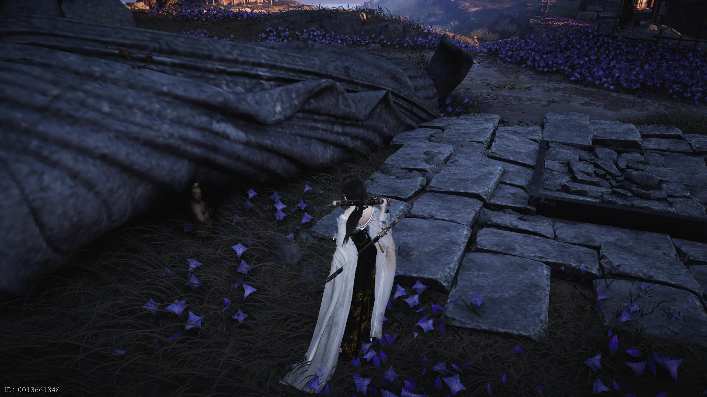
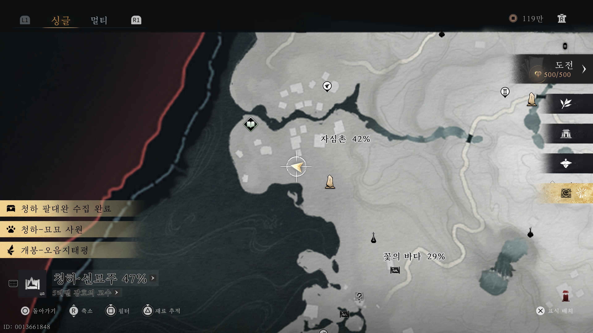

만사록
부서진 불상은 말이 없네
무너진 폐가에 사람의 그림자가 보인다
📜 퀘스트 개요
무너진 폐가에서 발견된 저주 인형.
이 불길한 물건을 올바른 시간, 올바른 대상에게 전달하여 액운을 막아야 합니다.
저주 인형 습득
아래 위치의 폐가로 이동하세요.
바닥에 떨어진 '저주 인형'을 발견할 수 있습니다. 이를 습득하세요.


불화 사신에게 전달 (시간 변경)
⚠️ 필수 조건: 시진을 진시(07:00~09:00)로 변경해야 합니다.
시간을 진시로 변경한 후, 이전 퀘스트(업화는 꺼지지 않네)에서 만났던 불화 사신에게 돌아가세요.
그에게 저주 인형을 전달하면 됩니다.


저주 인형을 무사히 처분하면
폐가의 음산한 기운이 사라지며
퀘스트는 완료됩니다.